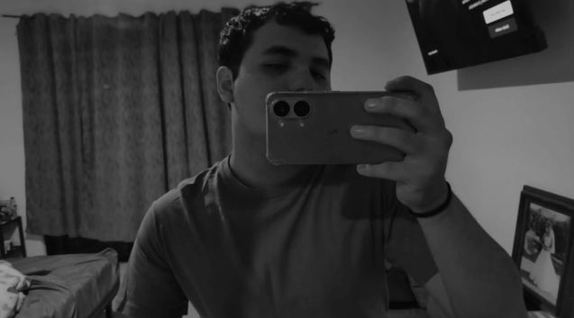
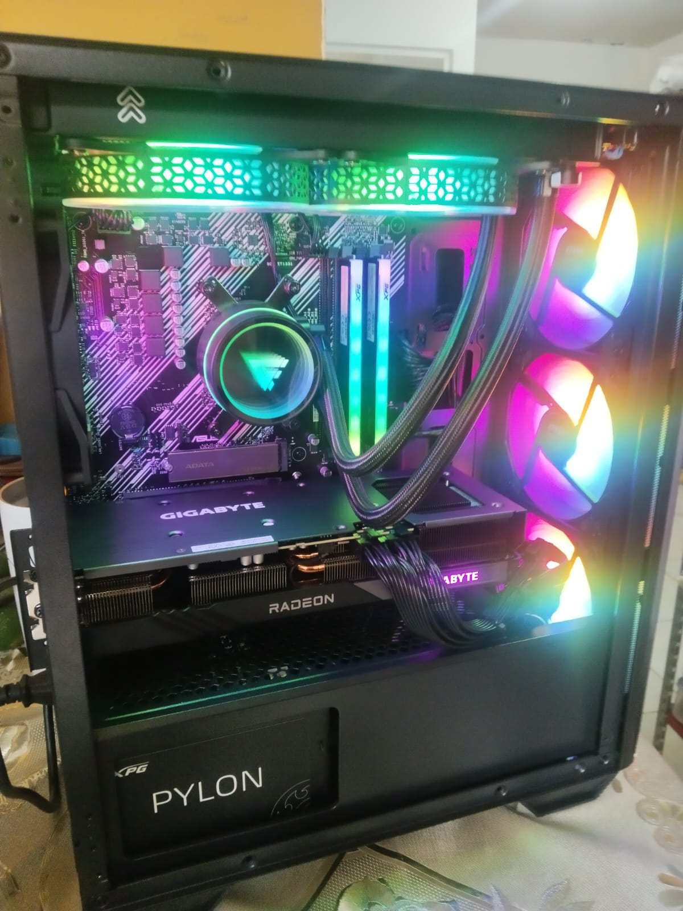
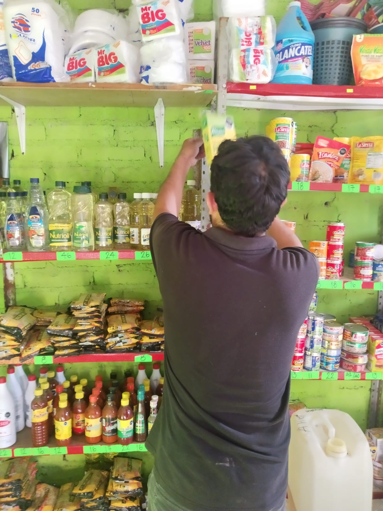
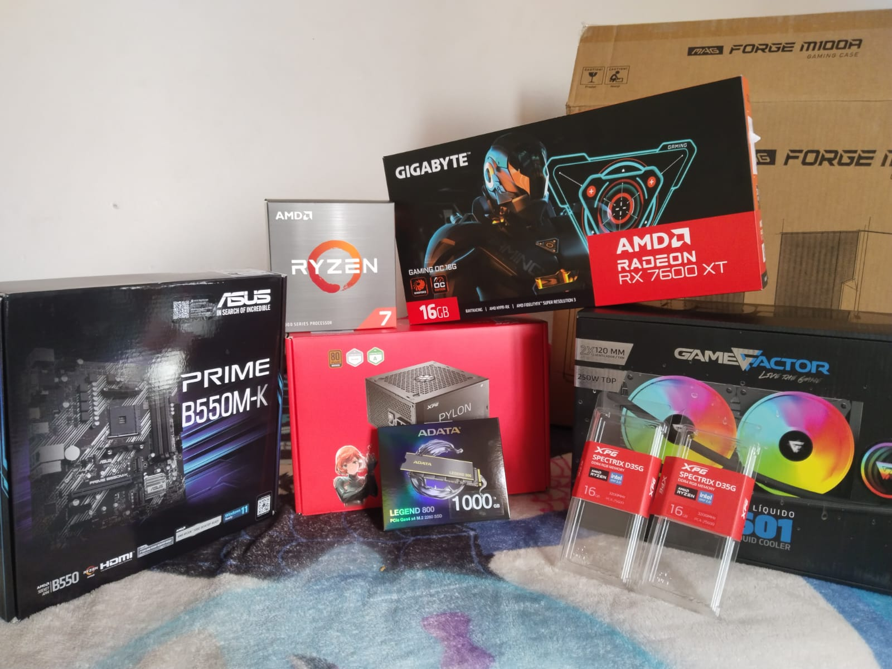
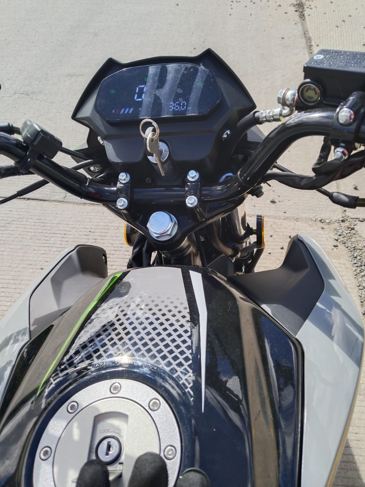

Mi personalidad
Soy una persona responsable, creativa y con ganas de aprender cosas nuevas.
Conoce un poco más sobre mí
CONÓCEME
Soy una persona responsable, creativa y con ganas de aprender cosas nuevas.
Me interesa aprender sobre tecnología, programación y desarrollo de páginas web.
Me gusta resolver problemas, trabajar en equipo y desarrollar nuevas ideas.

MIS PASATIEMPOS
Me interesa conocer nuevas tecnologías y aprender a crear proyectos digitales.
Me gustan los videojuegos y disfruto jugar en mis tiempos libres.
Disfruto practicar y ver deportes, especialmente el básquetbol.

MIS EXPERIENCIAS Y METAS
Estos son algunos de los logros y experiencias que forman parte de mi vida y de mis objetivos personales.

01Uno de mis objetivos es poner una tiendita junto con mis papás, aprender a administrarla y trabajar en familia.

02Me interesa armar mi propia computadora, elegir sus componentes y aprender más sobre hardware y tecnología.

03Disfruto salir en motocicleta, conocer nuevos lugares y vivir experiencias diferentes durante cada recorrido.
MIS EXPERIENCIAS
En esta sección comparto algunos momentos que disfruto, desde mis videojuegos favoritos hasta los viajes y experiencias que he vivido.
Me gusta jugar videojuegos en mis tiempos libres y disfrutar de diferentes partidas. Aquí comparto uno de mis momentos jugando.
Uno de mis recuerdos es este viaje a Puerto Vallarta, donde pude disfrutar del paisaje y conocer nuevos lugares.